Paul Dräger
paul.draeger@tu-dresden.de
Jochen Fröhlich
jochen.froehlich@tu-dresden.de
Kick-Off Meeting. Bonn, den 17.09.2026
Institut für Strömungsmechanik · Professur für Strömungsmechanik
Technische Universität Dresden
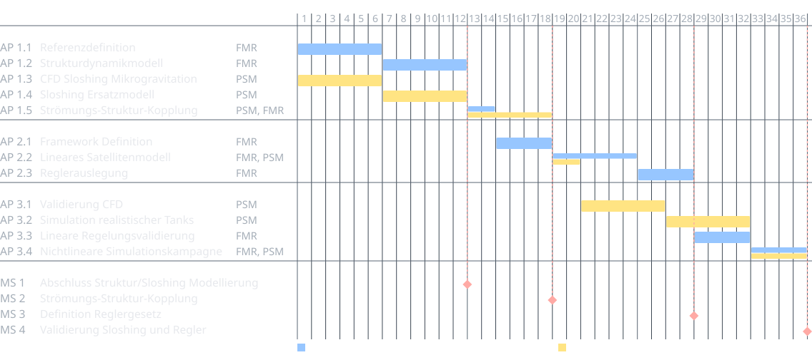
AP 1.3CFD µ-Gravitation (6 Monate)
AP 1.4Sloshing ML-Ersatzmodell (6 Monate)
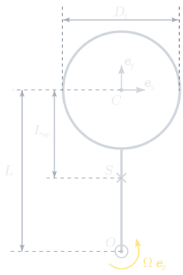
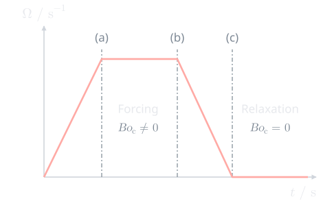
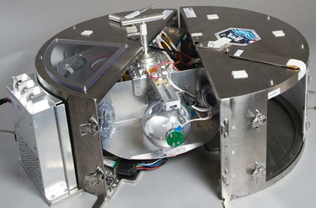
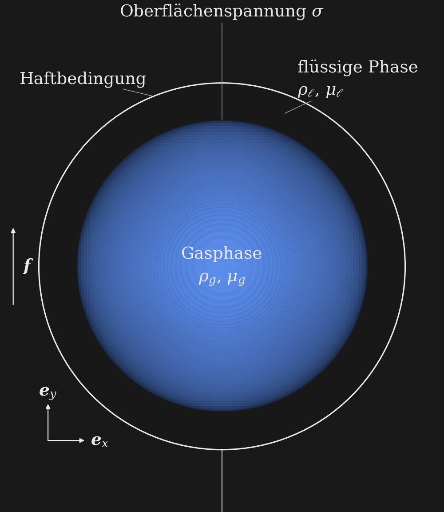
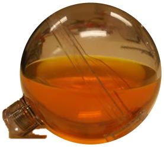
\[ \bm{f} = \density \begin{pmatrix} 2 v \rotrate + (\armlen + y)\, \rotacc + x\, \rotrate^2 \\ -2 u \rotrate - x\, \rotacc + (\armlen + y)\, \rotrate^2 \\ 0 \end{pmatrix} \]
[@dalmon2019fluidics]
| Nr. | \(\fillratio\) | \(\rotrate / \rotrate_1\) | \(t_{\mathrm{acc}} / t_{\mathrm{acc},1}\) | \(\bondcen\) | \(\bondeul\) |
|---|---|---|---|---|---|
| 1→ | 50 % | \(1\) | \(1\) | 76 | 24 |
| 2 | 75 % | \(1\) | \(1\) | 48 | 15 |
| 3 | 50 % | \(1/\sqrt{3}\) | \(1\) | 26 | 14 |
| 4 | 75 % | \(1/\sqrt{3}\) | \(1\) | 16 | 9 |
\[ \bondcen = \frac{\density\,\rotrate^2\,\armlen\,\bubdia^2}{\surf} \qquad \bondeul = \frac{\density\,\rotacc\,\armlen\,\bubdia^2}{\surf} \]
auf den Anfangsdurchmesser der Blase bezogen [@dalmon2019fluidics]
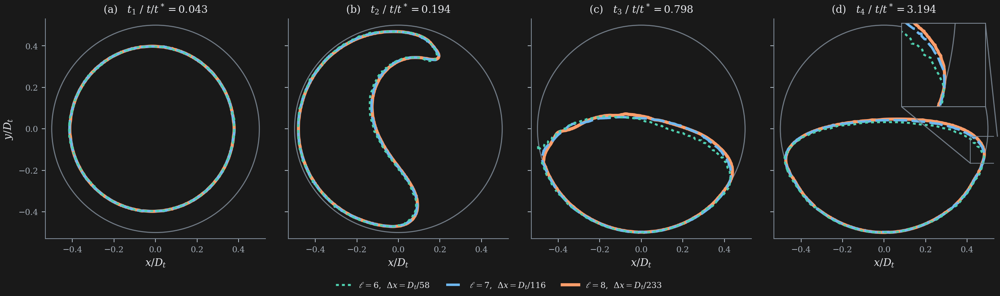
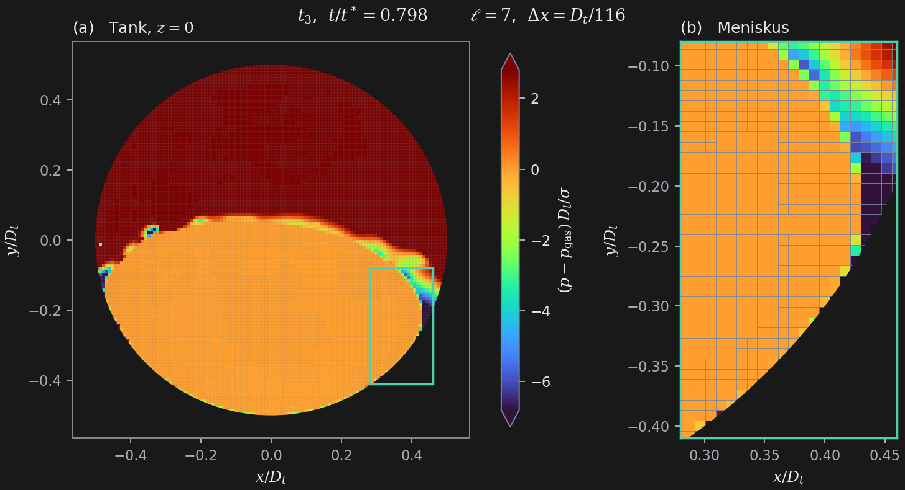
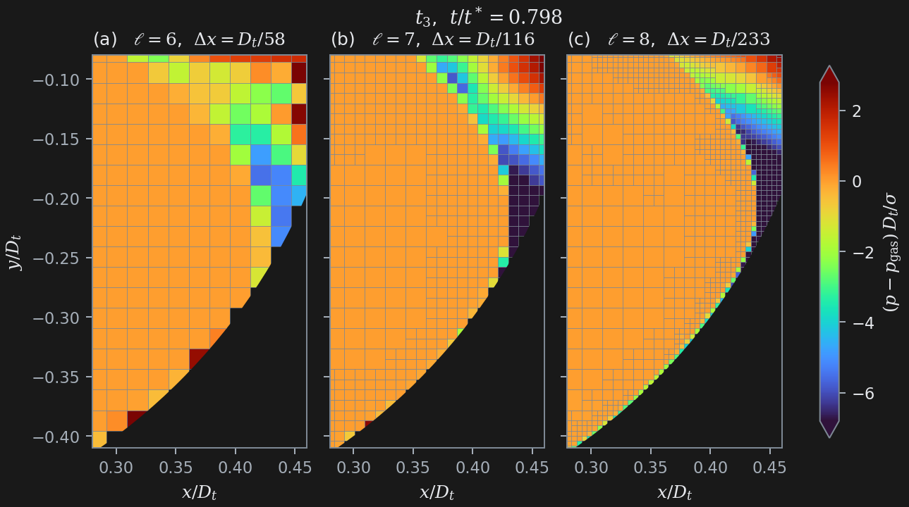
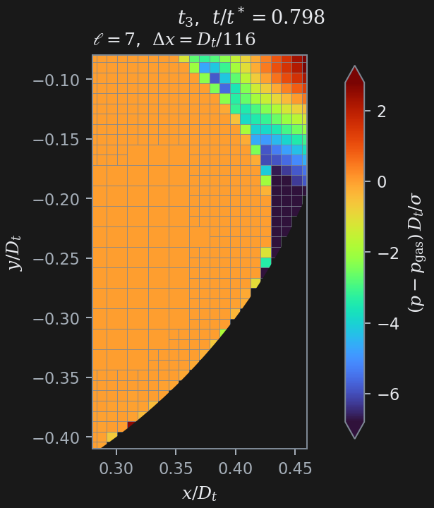
\[ \bm{F} = -\int_{\odomain} \nabla \pre\, \mathrm{d}V \;+\; \int_{\odomain} \nabla \cdot \shear\, \mathrm{d}V \;+\; \underbrace{\int_{\odomain} \surf\, \curv\, \diracs\, \no\, \mathrm{d}V} _{=\,0 \text{ (ideal)}} \]
(13.1)
diskret implementiert [@dalmon2018bubble]:
\[ \bm{F} = \int_{\odomain} \left( -\nabla \pre \;+\; \surf\, \curv\, \diracs\, \no \right) \mathrm{d}V \]
(13.2)
\[ \underbrace{\int_{\odomain} \density\, \frac{\partial \bmu}{\partial t}\, \mathrm{d}V} _{\text{Trägheit}} \;=\; \underbrace{-\oint_{\partial\odomain} \pre\, \no\, \mathrm{d}S \;+\; \oint_{\partial\odomain} \shear \cdot \no\, \mathrm{d}S} _{\text{Wandkräfte } \bm{F}} \;+\; \int_{\odomain} \bm{f}\, \mathrm{d}V \;+\; \underbrace{\int_{\odomain} \surf\, \curv\, \diracs\, \no\, \mathrm{d}V} _{=\,0 \text{ (vollständige Benetzbarkeit)}} \]
(14.1)
diskret implementiert (neu):
\[ \bm{F} = \int_{\odomain} \density\, \frac{\partial \bmu}{\partial t}\, \mathrm{d}V \;-\; \int_{\odomain} \bm{f}\, \mathrm{d}V \;=\; \frac{\mathrm{d}}{\mathrm{d}t} \int_{\odomain} \density\, \bmu\, \mathrm{d}V \;-\; \int_{\odomain} \bm{f}\, \mathrm{d}V \]
(14.2)
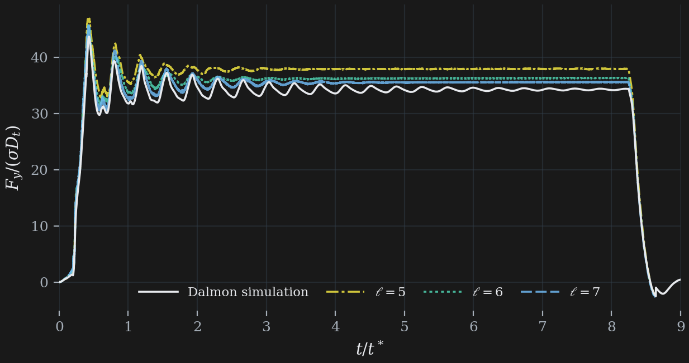
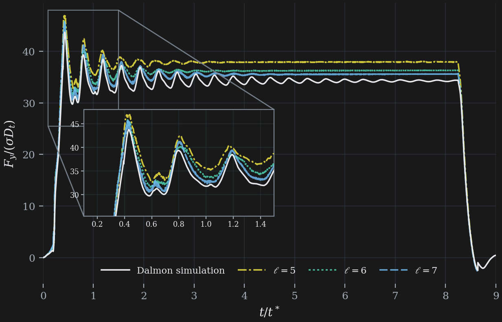
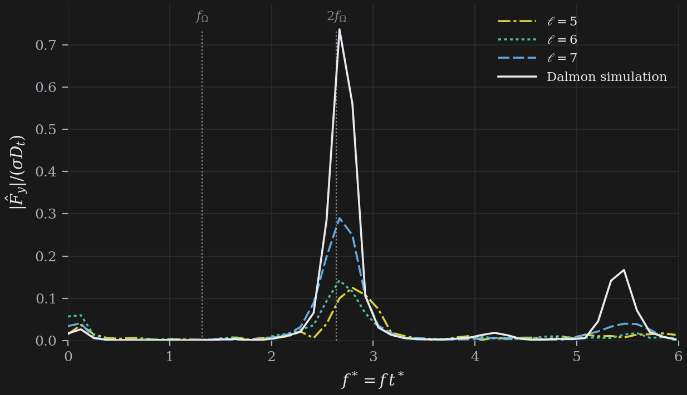
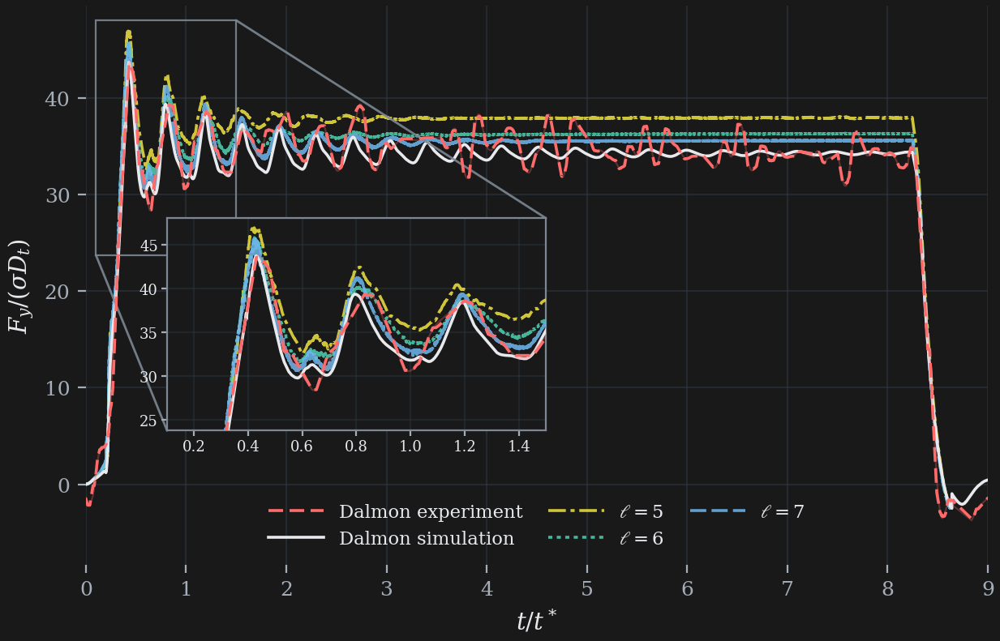
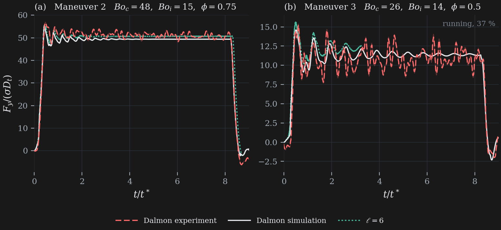
integral.h anstelle von tension.h in Basilisk